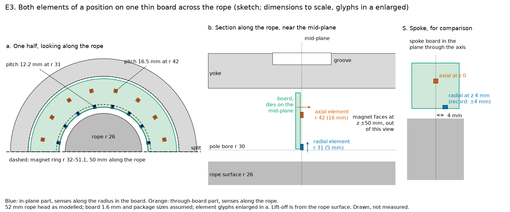
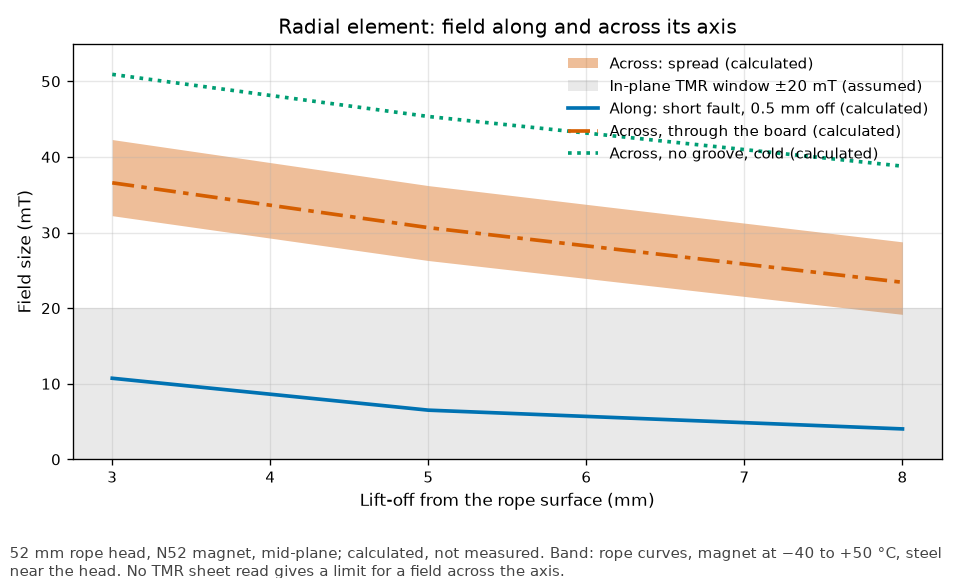
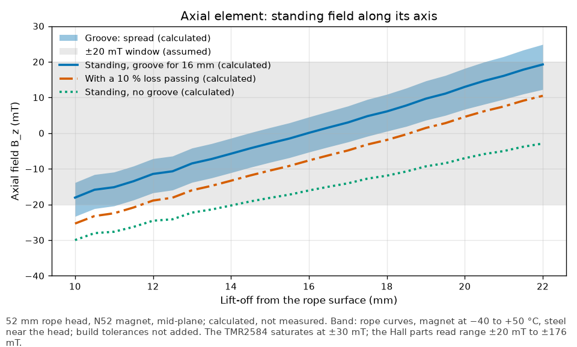

Every figure carries a unit and a tag in square brackets, such as [S1 §4]. The tags point to our internal source documents; ask for any one of them and we will send the source. "Calculated" means a finite-element field model, not a measurement. "Measured" means read on hardware. Nothing in this package has been selected. Where something is "proposed", it is a proposal for you to challenge.
The first heads to be built are for a 40 mm rope: ten heads, six of them for the first installation (38 mm rope) [S5 I04, I05]. The larger series is for the large installation (52 mm rope). Most calculated figures below are for the 52 mm head, because that is where the model work is furthest along. The 40 mm figures we have are given where they exist.

Figure 1. One half seen along the rope (a), a section along the rope at the board (b), and the spoke layout written into an early specification, for comparison only (S). This is the 52 mm head as modelled. The board thickness (1.6 mm) and the package sizes are assumed; "record: ±4 mm" is the old spoke layout's offset. Blue: a part that senses in its own plane (radial). Orange: a part that senses through its package (axial). [S1 Figure E3]
The head. Two magnet rings face each other along the rope. Each ring is made of one-piece sintered NdFeB half-rings, radially magnetised, with no pole shoe and no segments [S5 M01]. A steel yoke closes the circuit outside them. On the 52 mm head the magnets sit at z = ±50 to ±90 mm from the board plane (40 mm long, 100 mm between the inner pole faces) [S5 M07]. The rope passes through a free bore of Ø60 mm [S5 B01]. The yoke wall is 12.0 mm [S5 Y01]. The two magnet grades N52 and N48SH are always carried side by side; no grade is chosen [S5 M02].
The board's job. - Read 16 field signals per half (8 radial + 8 axial) continuously while the rope moves. The signal band is 0–125 Hz (1 mm of rope per sample at 15 m/min) [S1 §1]. - Read two digital temperature sensors per half (fixed [S13]). The specification places one on the board or carrier and one on the yoke [S6 §7]. - Time-stamp against a 1 Hz sync edge from the root box [S6 §10]. - Stream raw values to the root box. The half does no fault detection [S6 §7].
What is fixed by us and what is not.
| Fixed by us | Not fixed (yours to advise on) |
|---|---|
| One thin board per half carries the elements, mounted in different planes (where the digital and power parts go is open). The spoke layout in an early specification was never confirmed. | Board thickness, outline detail and stack-up (ours to propose: no outside dimension is given) [S13] |
| Two 8-channel converters per half; 16 channels; temperature on digital parts, two per half | Converter part, gain, reference scheme, sampling and filter settings |
| Search order for the elements: TMR first; Hall only if no TMR fits, and then argued | Axial element technology (section 6); the exact parts |
| N52 and N48SH shown side by side; magnets at most 45 °C in service | 5 V rail: only if a part needs it [S13] |
| Names: SWS, head, half, sensing element, channel, root box | Line from the half to the root box: RS-485 is proposed, not fixed |
Positions on the 52 mm head (rope surface at r 26 mm; lift-off is measured from the rope surface) [S1 §2]:
| Item | Radius (mm) | Lift-off (mm) | Pitch between the 16 positions (mm) |
|---|---|---|---|
| Rope surface, nominal / at +4 % | 26.0 / 27.0 | 0 / 1.0 | — |
| Radial element at 3 mm (the specification's floor; not a chosen position) | 29.0 | 3 | 11.4 |
| Pole bore (free bore) | 30.0 | 4 | — |
| Radial element at 5 mm (the specification's design stand-off) | 31.0 | 5 | 12.2 |
| Radial element at 8 mm | 34.0 | 8 | 13.4 |
| Axial element, groove zero at 13 / 16 / 19 mm | 39.0 / 42.0 / 45.0 | 13 / 16 / 19 | 15.3 / 16.5 / 17.7 |
| Yoke inner face between the magnets, N52 / N48SH model | 50.1 / 51.1 | 24.1 / 25.1 | 19.7 / 20.1 |
On the 40 mm head with the radial element at 5 mm, the element radius is 25.0 mm and the pitch is 9.82 mm [S9; S5 D04]. On the old 40 mm prototype the axial element is reported at 16.5 mm lift-off. That position is not confirmed [S5 A02].
The 8 positions of a half are at 22.5° pitch. The split between the halves falls midway between two positions, 11.25° from each [S5 D03]. A radial element at 3 mm lies inside the pole bore (r 29 < 30). At 5 mm it is 1 mm outside the bore [S1 §2].
The model is a 2D axisymmetric field model with a homogenised rope, placeholder steel curves and a large model box. The wire-break signals come from a 3D model. Nothing in this table has been measured in the head. The grades are given as N52 / N48SH [S1 §1].
Radial element, with the groove set for the axial zero at 16 mm:
| Lift-off | Steady B_r along its axis (on the mid-plane) | B_r per mm off the mid-plane | Steady B_z across its axis (through the board) | Spread of B_z (rope curves, −40…+50 °C, magnets 1 % weaker, steel near the head) | Without a groove, cold (−40 °C) | Short strong fault, peak ΔB_r | One broken outer-strand wire, 3D | One broken inner-rope wire, 3D |
|---|---|---|---|---|---|---|---|---|
| 3 mm | 0 (≤ 0.08) | 2.5 / 2.4 mT/mm | −36.6 / −36.4 mT | −42.3…−32.2 / −42.3…−31.9 mT | −50.9 / −52.2 mT | 9.51 / 9.47 mT | 1.95–2.46 mT | 0.158–0.464 mT |
| 5 mm | 0 (≤ 0.04) | 2.9 / 2.9 mT/mm | −30.7 / −30.5 mT | −36.2…−26.3 / −36.3…−26.1 mT | −45.4 / −46.8 mT | 5.07 / 5.05 mT | 1.17–1.36 mT | 0.113–0.301 mT |
| 8 mm | 0 (≤ 0.05) | 2.7 / 2.7 mT/mm | −23.4 / −23.4 mT | −28.8…−19.2 / −28.9…−19.0 mT | −38.8 / −40.5 mT | 2.68 / 2.67 mT | about 0.6–0.7 mT (derived) | about 0.06–0.16 mT (derived) |
The 3D wire columns are at rope inductions of 1.881 / 1.989 / 2.093 T. They are one magnet case, not per grade [S1 §1]. Strand ripple from a sound rope: B_r 4 mm off the plane 0.32–0.49 mT p-p at 3 mm; B_z at 3 mm 0.15–0.20 mT p-p [S1 §1].
Axial element, each at the zero of its own groove:
| Position (groove depth) | Steady B_z along its axis | Spread (min…max) | Level per 1 % of metal lost | Short fault ΔB_z | One wire (3D), outer / inner |
|---|---|---|---|---|---|
| 13 mm (4.34 mm), N52 | +0.45 mT | −5.8…+5.3 mT | −0.881 mT | −1.60 mT | — |
| 16 mm (3.58 mm), N52 | +0.09 mT | −5.3…+4.5 mT | −0.774 mT | −1.04 mT | 0.140–0.158 / 0.031–0.064 mT |
| 16 mm (3.92 mm), N48SH | +0.09 mT | −5.8…+4.7 mT | −0.802 mT | −1.07 mT | — |
| 19 mm (2.77 mm), N52 | −0.07 mT | −3.8…+3.4 mT | −0.522 mT | −0.62 mT | — |
| No groove at 16 mm, N52 / N48SH | −16.1 / −17.9 mT | −18.3…−14.9 / −20.4…−16.7 mT | −0.201 / −0.217 mT | −0.96 mT | 0.14–0.17 mT |
Across the axial element's axis, B_r is 0 on the mid-plane and 2.9–3.3 mT per mm off it [S1 §1].
The arithmetic is shown so that you can redo it. "(d)" means derived here from the figures above.
Axial element, range along its axis (groove for 16 mm, N52) [S1 §1]: - spread −5.3…+4.5 mT; - plus build tolerance ±2.6 mT (groove depth ±0.1 mm moves the zero ±0.41 mm; element ±0.5 mm; ±0.91 mm × 2.9 mT/mm); - plus a 10 % loss passing (10 × −0.774 = −7.7 mT); - total −15.6…+7.1 mT.
If the zero is trimmed in place at installation, this narrows to −8.0…+0.1 mT. Without a groove it is −21.3…−13.9 mT.
Axial element, resolution. The quantity it serves is % of metal, at 0.774 mT (N52) or 0.802 mT (N48SH) per 1 %. So the error budget is set by zero drift, not by noise. A change of 0.77 mT in the zero over −40…+50 °C reads as 1 % of metal [S1 §1, §5]. LMA is a DC value, compared against a base trace taken months earlier [S1 §1].
Radial element, along its axis. At 3 mm it needs about 10.7 mT (9.5 mT short-fault signal plus 1.2 mT for 0.5 mm off the mid-plane) [S1 §4]. At 5 mm it needs about 6.5 mT (d: 5.07 + 0.5 × 2.9).
Radial element, across its axis (the critical number). 32–42 mT of steady axial field passes through the package with the groove, and up to 51–52 mT without one [S1 §4]. No sheet we read says what that does to an in-plane TMR part (section 8).
Radial element, resolution. There are two requirements on record: - The specification asks for ≤ 0.11 mT p-p after the template subtraction in 0–125 Hz on the 52 mm rope. That figure is set on a 0.22 mT smallest signal at the worst angle, which comes from a literature transfer [S6 §7; S5 E13]. - The 3D model's weakest case, one broken inner-rope wire at 5 mm, is 0.113 mT zero-peak. With the acceptance rule "zero-peak ≥ 2 × noise p-p" this asks for ≤ 0.056 mT p-p (d: 0.113 / 2) [S1 §4].
The two signal estimates differ several-fold and are not reconciled (section 8). The specification's noise budget is the one on record.
The numbers in electrical terms (d, using the prototype parts' sheet figures at a 3.3 V supply [S1 §3]):
| Radial (TMR2185 class, 3.4 mV/V/mT) | Axial (TMR2584 class, 5 mV/V/mT) | Axial (DRV5055-A1 class Hall, 60 mV/mT) | |
|---|---|---|---|
| Sensitivity at 3.3 V | 11.2 mV/mT | 16.5 mV/mT | 60 mV/mT |
| Full signal needed | ±10.7 mT → ±120 mV | −15.6…+7.1 mT → −257…+117 mV | → −936…+426 mV around mid-supply |
| Smallest step | 0.056 mT → 0.63 mV p-p | 1 % of metal, 0.774 mT → 12.8 mV | 1 % → 46 mV |
One LSB of a 24-bit converter at ±1.2 V full scale is 143 nV (d: 2.4 V / 2^24). The converter's resolution is not the limit. The limits are the noise and drift of the element and of the front end.
"n/s" means not on the sheet. All parts below are candidates; none is selected [S1 §3].
Radial element: parts that sense in the package plane (they lie flat, with the axis along the radius):
| Part | Range | Sensitivity | Noise | Offset drift | Supply / current | Package | Note |
|---|---|---|---|---|---|---|---|
| TMR2185 (MultiDimension) | ±20 mT spec., ±100 mT saturation | 3.4 mV/V/mT | n/s | n/s | bridge; 77 µA at 3.3 V (d) | SOP8 / LGA4L 2.0 × 1.5 × 0.73 mm | on the old prototype |
| CT100 (Allegro) | ±20 mT linear, ±50 mT operating | 4.5 mV/V/mT | 0.16 µT/√Hz; 0.012 mT p-p in 0–125 Hz (d) | ±4.0 µV/V/K max | bridge; 0.3 mW at 3 V | SOT23-6, DFN6 | only radial part with noise on its sheet |
| TLI55910-A6E (Infineon) | ±35 mT (in-plane magnitude) | 4.8 mV/V/mT | density n/s | ±4 µV/V/K | bridge; about 0.4 mA at 3.3 V (d) | SOT23-6 | |
| TMR2084S (MultiDimension) | ±40 mT | 6 mV/V/mT | n/s | 0.008 mV/V/K | bridge; 100 kΩ | SOT23-5 |
Axial element: parts that sense through the package (they lie flat, with the axis along the rope):
| Part | Range | Sensitivity | Noise 0–125 Hz | Zero drift over temperature | Supply / current | Package |
|---|---|---|---|---|---|---|
| TMR2584 (Z-axis TMR) | ±20 mT spec.; saturation ±30 mT (electrical table) or ±20 mT (selection guide) | 5 mV/V/mT | n/s | "0.5 mV max" over −40…125 °C; unit unclear (total or per K) | bridge; 1.1 mA at 3.3 V (d) | SOT23-5 |
| TMR2583 (Z-axis TMR) | ±20 mT fit, ±100 mT saturation | −1.5 mV/V/mT | n/s | unit truncated on the sheet | bridge; 3.3 mA at 3.3 V (d) | SOT23-5 / TO94 |
| DRV5055 A1 / Z1 (TI Hall) | ±21 mT (5 V figure) | 60 mV/mT at 3.3 V | 0.016 mT p-p (d) | ±1 % × VCC, typical only (±0.55 mT, d) | ratiometric single-ended; 2 mA typ | SOT-23 |
| TMAG5253 BA1 (TI Hall) | ±20 mT | 60 mV/mT | 0.016 mT p-p (d) | ±50 mV over −40…125 °C (±0.83 mT, d) | ratiometric; 2.6 mA, enable pin | X2SON-4, 0.4 mm high |
| A1304 (Allegro Hall) | ±37.5 mT | 40 mV/mT | 0.017 mT p-p (d) | ±40 mV, 25→85 °C (±1 mT, d) | ratiometric; 7.7 mA | SOT23-W; rated to 85 °C only |
| MLX91377 (Melexis Hall) | ±10…80 mT programmed | programmed | density n/s | about 0.08 mT (d) | analog, 5 V, 11 mA | TSSOP-16 |
Set aside on the sheets [S1 §3]: - digital-output Hall parts (PWM, SENT, SPI, I²C), because they bypass the converters; - three-axis parts, because one package sits at one radius, while radial and axial want 5 and 16 mm. The Hall ones also have 0.11–0.16 mT p-p in-plane noise; - omnipolar or narrow-range parts.
| Item | As on record | Status |
|---|---|---|
| Count | Two 8-channel converters per half: 8 radial + 8 axial = 16 channels, none spare | fixed [S5 K01] |
| Part | ADS131M08 (TI): 24-bit delta-sigma, 8 simultaneous channels, PGA 1–128; ADS131E08 the other candidate in the simultaneous family | proposal [S5 K02; S8] |
| Sampling | Our current leaning: simultaneous sampling, no multiplexer. One 8.192 MHz clock shared as CLKIN by both converters of a half, and one SYNC/RESET pulse at start | leaning, not a choice; you advise [S6 §10; S5 K08] |
| Multiplexed alternative | Considered in-house: ADS114S08 (16-bit), with ADS124S08 (24-bit) as a drop-in. 12 inputs per chip, one at a time. Its sheet gives at most 362–407 samples/s per bridge on three chips at 4000 SPS (d), and adjacent elements are not read at the same instant | on record as an alternative [S8] |
| Rate | Converter runs faster and is averaged down. On record: 4000/s decimated (simulation work) or 500/s at OSR 8192 (read-out note). Line rate about 250 values/s per channel (proposal; the specification asks ≥ 250, 500 preferred) | several values [S5 K04, V01] |
| Reference | Our position: ratiometric, with the element supply as reference where the part allows. The ADS131M08 has an external REFIN of 1.1–1.3 V (data sheet), so a 3.3 V bridge supply needs a divider. The specification text still says "internal 1.2 V only"; the data sheet says otherwise. | ratiometric fixed with the converter count [S5 K01]; how it is fed is open; two statements on record [S7 §2; S5 K03] |
| Input | ADS131M08 input impedance 330 kΩ differential at gain 1–4, ≥ 1 MΩ at gain 8–128. Bridges in the kΩ range (TMR2584 about 3 kΩ) load it lightly; a Hall output is single-ended around half supply. | data sheet [S7 §2] |
| Temperature | Two digital parts per half on I²C/SPI (TMP117 class most named; priced only). 1-wire was judged workable but weak (750 ms conversion, accuracy at −40 °C). | fixed: two per half, digital; part open [S5 T01, T02; S14] |
| Gain on record | A proposal for the simulator only: radial gain 1, axial gain 2, on assumed sensitivities | not a design [S5 K05] |
| Power | Specification: 0.2–0.4 W per half in total. A later page: under about 0.5 W. ADS131M08 21.5 mW typ in high-resolution mode (data sheet), against 6.0 mW in the register (the low-power headline). | several values [S5 S03, K07] |
| Supply | 24 V from the root box over the same cable; local 3.3 V regulation; LDOs; no ferrite or iron-cored inductors near the poles | on record [S5 S01, D05] |
| Microcontroller | One per half, Cortex-M class with SPI, DMA, UART, CRC. No part named. The half's code needs about 3.4 kB RAM at 250/s (calculated on a PC). | open [S5 U01, U02] |
| Other on record | 3-axis accelerometer and a reed/Hall "halves closed" switch "to consider"; a small test loop beside each element for in-place checks (proposal) | proposals [S5 Q01, D06] |
Element currents, 8 per half [S1 §4]: - radial TMR parts: 0.3–3.2 mA; - axial Z-axis TMR: 8.8–26 mA; - axial 3.3 V Hall: 16–62 mA; - axial 5 V Hall or digital parts: 48–88 mA (0.24–0.44 W at 5 V; the top of that alone exceeds the specification's 0.2–0.4 W per half).
A groove 20 mm wide is cut all round the outside of the yoke at the board plane. It moves the zero of the steady axial field in towards the rope, so the axial element can sit on a near-zero background. It also raises the loss-of-metal reading. Earlier groove figures came from a model box that was too small and were about 1.1 mm too deep; all figures here are from the corrected large-box model [S3 Table 1].
| Zero at lift-off | Groove depth, modelled magnet | N52, 18.1 mm magnet | N48SH, 19.1 mm magnet | Old small-box value (superseded) |
|---|---|---|---|---|
| 13 mm | 4.98 mm | 4.34 mm | — | 6.08 mm |
| 16 mm | 4.25 mm | 3.58 mm | 3.92 mm | 5.36 mm |
| 19 mm | 3.53 mm | 2.77 mm | — | 4.64 mm |
[S3 Table 1; S1 §1; S5 Y04]
The depths differ by magnet and by how the magnet was scaled in each study. They are not reconciled, and the element-run values are the later ones. Other figures for this table: - Each 0.1 mm of depth moves the zero about 0.41 mm [S5 Y07]. - Without a groove the zero is at 24.5 mm [S3 Table 1]. - 40 mm head (model): 4.00 / 3.23 / 2.64 mm for a zero at 10 / 13 / 16 mm [S3 Table 1]. - On the 40 mm head, a groove cut for a 40 mm rope leaves about −6 mT at the 16 mm element with a 38 mm rope [S10]. - The old 40 mm prototype has a 10 × 2 mm groove. Its zero, as drawn and calculated, is at 16.7 mm [S5 Y08; S4 Figure D].

Figure 2. Radial element: the field along its sensing axis (blue) and the steady field across it, through the board (orange band), against lift-off. 52 mm head, N52, calculated. N48SH is within 0–1.4 mT of these values (table 2.2). The grey band is the prototype part's specified range along its axis; no sheet gives a limit across the axis. "Standing" in the figures means steady. [S1 Figure E1]

Figure 3. Axial element: the steady field along its axis against lift-off, with the groove for 16 mm, its spread, a 10 % loss passing, and no groove. 52 mm head, N52, calculated. The caption's ±30 mT for the TMR2584 is one of two figures on its sheet (±20 or ±30 mT); the 3.3 V Hall options in section 2.4 are ±20–37.5 mT. [S1 Figure E1]
Each half sends raw values only: - 16 channels as 24-bit samples, about 250 values per second per channel (proposal); - the temperature readings and status, packed into 100 ms frames of 1 229 bytes (1 235 on the wire) with a CRC-32C; - about 123.5 kbit/s on a 460.8 kbit/s line (27 %) [S5 V01, Z02, Z03].
The line to the root box is proposed as RS-485 (the specification still has RS-422, one per half). It runs with 24 V on the same shielded cable and a separate pair for a 1 Hz sync edge, which each half latches against its sample counter (80 µs residual) [S5 N01, N02, Z04]. The root box does all detection [S6 §10].
Both options lie flat on the thin board. The radial element stays an in-plane TMR part in both [S1 §2]. Figures are for the groove case.
| Option A: Z-axis TMR bridge (TMR2584 / TMR2583) | Option B: 3.3 V linear Hall, ratiometric (DRV5055 A1/Z1, TMAG5253 BA1, A1304) | |
|---|---|---|
| Fits the search order (TMR first) | yes | only if A fails, and then argued |
| Range against need (−15.6…+7.1 mT; no groove −21.3 mT) | ±20 mT specified, saturates at ±30 (or ±20) mT: groove only | ±20–37.5 mT, no saturation stated: groove; A1304 also without a groove |
| Zero drift −40…+50 °C, as % of metal | 0.4 % if the TMR2584's offset figure is a total; 12 % if it is per kelvin (the sheet does not say) | 0.7–1.3 % (DRV5055 figure typical only; could reach about 1.4 %); needs a per-part temperature table |
| Noise | not on the sheets; measured on the prototype 0.6–1.0 µT rms in 1–10 Hz [S12] | 0.016–0.017 mT p-p in 0–125 Hz (d), about 0.02 % of metal |
| Drift over life | not on the sheets | stated on the sheets (e.g. 0.17 mT, TMAG5253) |
| After a strong field | risk of a shifted zero (pinned / free layer); not on the sheets | Hall die has no magnetic memory; lead frame magnetisation named as a risk |
| Current, 8 per half | 9–26 mA | 16–62 mA |
| Into the converter | bridge, differential, ratiometric: direct | single-ended around half supply: negative input to a half-supply divider of the element supply |
| Prototype experience | the old prototype carries it (TMR2584) | none |
[S1 §4, §5; S2 easy read and Hall paragraph]
Proposed (for you to challenge, not a decision): - Keep a Z-axis TMR bridge (Option A) as the first line for the axial element. It follows the search order, fits the range with the groove, reads ratiometrically like the radial bridges, and is the part the prototype already carries. - Lay out the axial position so that a 3.3 V ratiometric Hall part (Option B) can be fitted instead. That means room for the footprint and a half-supply divider at the converter input. - Let two prototype measurements decide: the axial zero over temperature (at least −20…+45 °C, extended to −40 °C by the fitted slope until a cold run is made), and the axial zero before and after exposure to a strong field. - Move to Hall if the TMR part's zero moves by more than 0.77 mT (1 % of metal) over −40…+50 °C or after exposure.
Pros of the proposal: nothing is built on Hall before TMR has been tried; the decision rests on one measured number.
Cons: a board that takes either part costs layout room in a 16.5 mm pitch. The TMR2584's drift unit is unclear until measured. The one strong-field event on the prototype already moved an axial channel by 0.64 mT, close to the 0.77 mT limit, with the cause not separated.
Each question stands on its own.